شعبۂ حفظ القرآن
A gentle, disciplined space where young hearts carry the entire Book of Allah — verse by verse, day by day — alongside the modern education that shapes the rest of their lives.
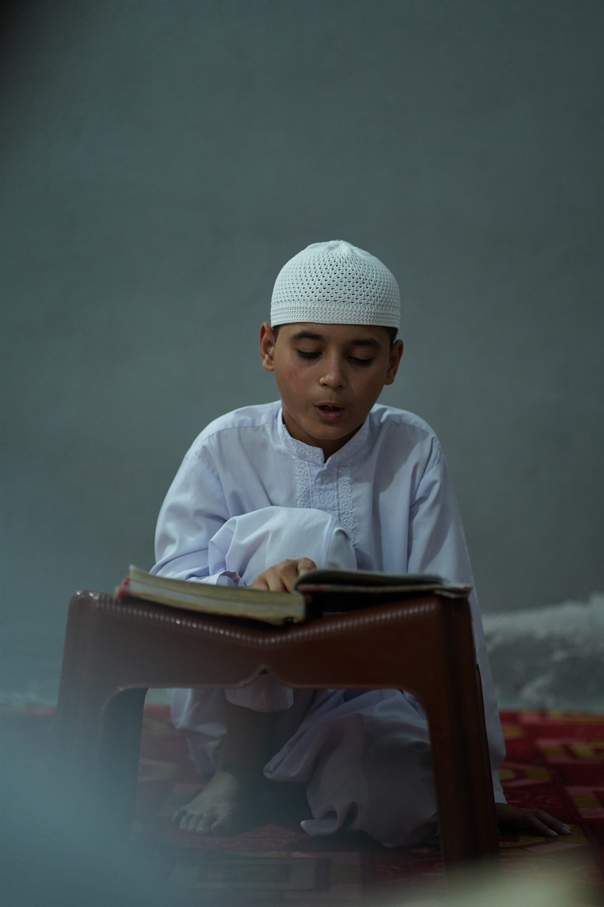
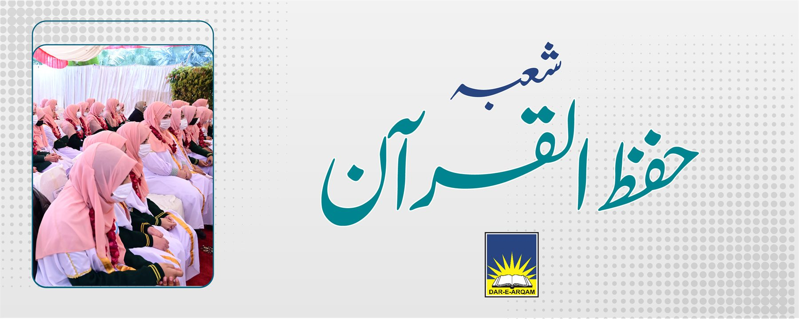
قرآنِ مجید — نسلِ نو کے سینوں میں محفوظ
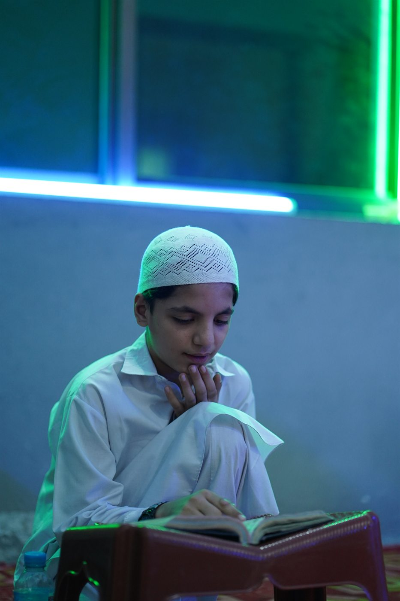
حفظ قرآن کی اہمیت
دار ارقم اسکولز نے حفظ کلاسز کے قیام میں پیش قدمی کی، تاکہ حفظ قرآنِ مجید جیسے عظیم عمل کو وہ مقام دیا جائے جس کا وہ حق دار ہے۔ حفظ کلاسز کو خصوصی اہمیت دی جاتی ہے اور اس کے لیے آراستہ اور باوقار کلاس رومز مخصوص کیے گئے ہیں۔
یہ طلبہ ہمارے لیے باعثِ رحمت اور ان کے والدین کے لیے روزِ قیامت باعثِ نجات ثابت ہوں گے، ان شاء اللہ۔
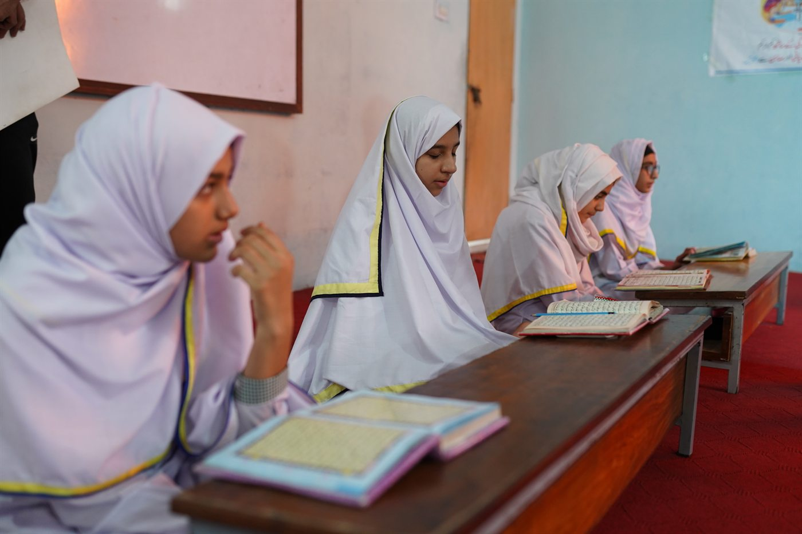
پروگرام کا ڈھانچہ
دار ارقم کے تمام کیمپسز میں حفظ القرآن کی سہولت فراہم کی جاتی ہے۔ ناظرہ قرآن کی تعلیم نرسری سے شروع ہو کر جماعتِ ششم تک عام تعلیم کے ساتھ ساتھ جاری رہتی ہے، اور شعبۂ حفظ میں داخلے کی عمر نو سے تیرہ برس مقرر ہے۔
رمضان المبارک اور سال بھر فہمِ قرآن اور سیرت النبی ﷺ کی کلاسز کا خصوصی اہتمام کیا جاتا ہے، اور باصلاحیت حفاظ کے لیے علیحدہ کیمپ بھی منعقد کیے جاتے ہیں۔
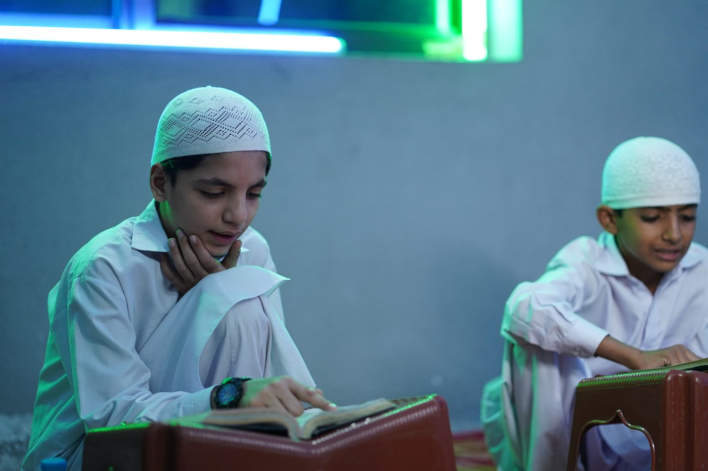
طریقہ تدریس
ہر روز کا آغاز تلاوتِ قرآنِ مجید سے کیا جاتا ہے، جس کے بعد سنتِ نبوی ﷺ پر ایک مختصر بیان ہوتا ہے۔ ہر جماعت میں باقاعدگی سے قرآنِ مجید کا ترجمہ پڑھایا جاتا ہے۔
ایسا اسلامی ماحول فراہم کیا جاتا ہے جس میں ادب و احترام اور اسلامی آداب کو مکمل طور پر اپنایا جاتا ہے — غرض قرآنِ مجید کی تعلیمات پر عملی طور پر کاربند رہا جاتا ہے۔
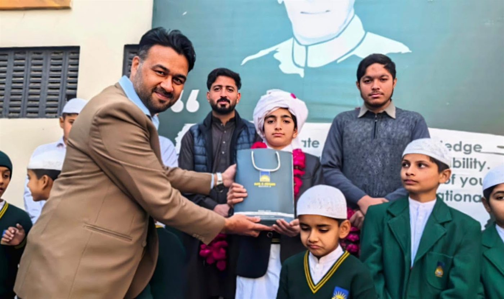
طلبہ کی پیش رفت اور معاونت
ہمارے طلبہ کی محنت اور اساتذہ کی رہنمائی کے ثمرات ہر سال سامنے آتے ہیں — ۲۰۱۸ء میں ایک سو ایک اور ۲۰۱۹ء میں سڑسٹھ طلبہ نے حفظِ قرآن مکمل کیا۔
ہر حافظ طالبِ علم کی محنت کو سراہا جاتا ہے اور انہیں مسلسل رہنمائی اور حوصلہ افزائی فراہم کی جاتی ہے، تاکہ وہ اس عظیم سفر کو کامیابی سے مکمل کر سکیں۔
خصوصیات
خوبصورت ائر کنڈیشنڈ کلاسرومز
مشفقانہ تربیتی ماحول اور ہم نصابی سرگرمیاں
اہداف کے ذریعے مختصر عرصہ میں تکمیلِ قرآن
داخلی و خارجی امتحانات کا جامع نظام
مانیٹرنگ اور ٹریننگ کا مربوط نظام
طلباء، اساتذہ اور والدین کی کونسلنگ
ملکی و غیر ملکی مقابلہ جات میں شرکت اور عمدہ کارکردگی
لہجات پر خصوصی توجہ
اخلاقی و کرداری تربیت کا نظام
شیڈول
حفظ القرآن کی سالانہ کارکردگی
سال ۲۰۲۲ تک ایک ہزار ایک سو سے زائد طلبہ و طالبات دارِ ارقم سکولز اینڈ کالجز سے حفظِ قرآن کی سعادت حاصل کر چکے ہیں۔
تقسیمِ انعامات — شعبۂ حفظ القرآن
وَمَا أَرْسَلْنَاكَ إِلَّا رَحْمَةً لِّلْعَالَمِينَ
سورۃ الانبیاء، آیت ۱۰۷ — تقریب کے پس منظر میں آویزاں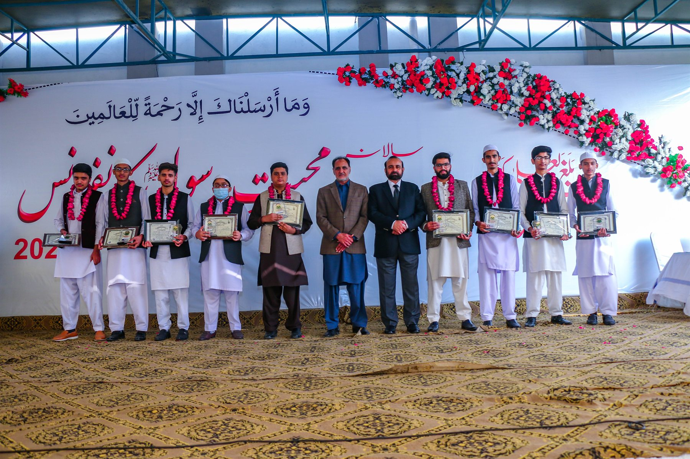
ہر سال حفاظِ کرام کی محنت اور لگن کو سراہنے کے لیے ایک خصوصی تقریب کا اہتمام کیا جاتا ہے، جہاں انہیں سند اور انعامات سے نوازا جاتا ہے۔ یہ تقریب نہ صرف حفاظ کی کاوشوں کا اعتراف ہے، بلکہ دیگر طلبہ کے لیے بھی قرآنِ مجید سے جڑنے کا ایک خوبصورت پیغام ہے۔
والدین اور اساتذہ کی موجودگی میں یہ لمحہ ہر حافظ کے لیے ناقابلِ فراموش بن جاتا ہے۔ اللہ تعالیٰ ہمارے حفاظِ کرام کو دنیا و آخرت میں سرخرو فرمائے، آمین۔
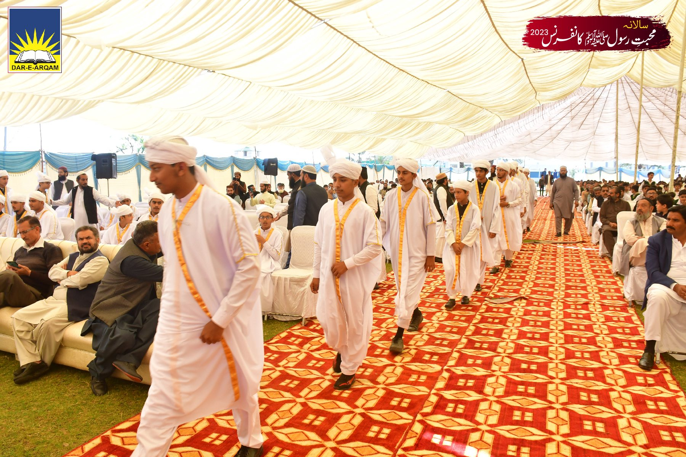
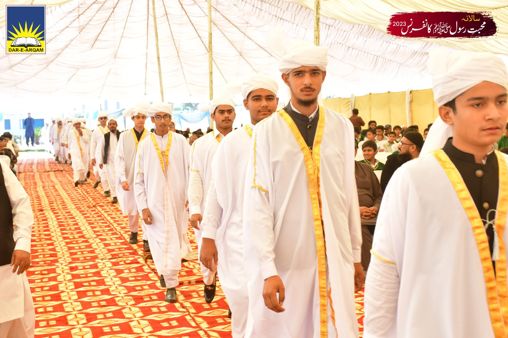
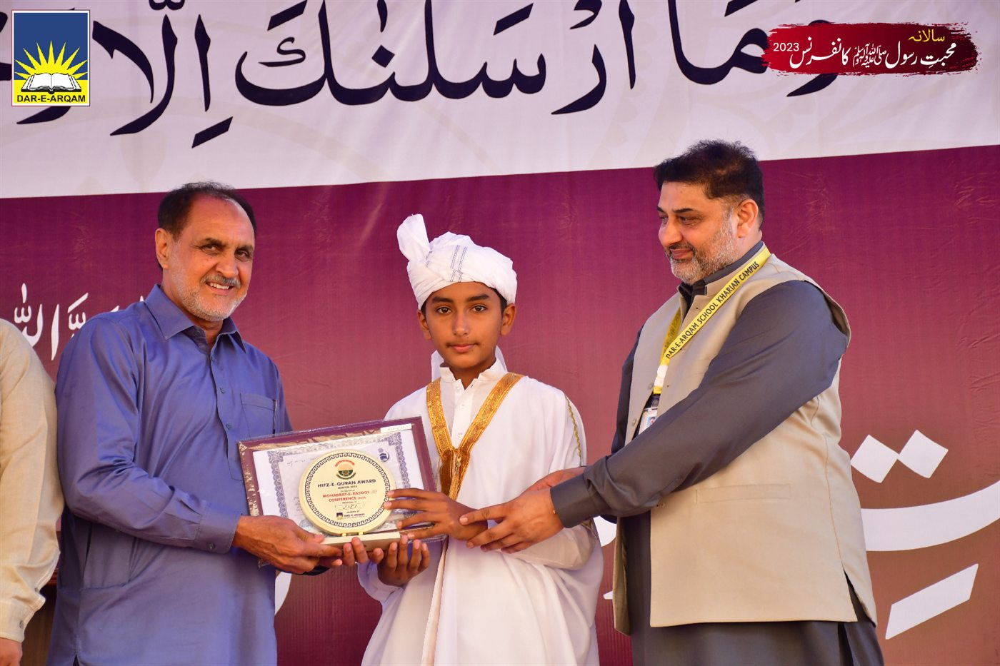
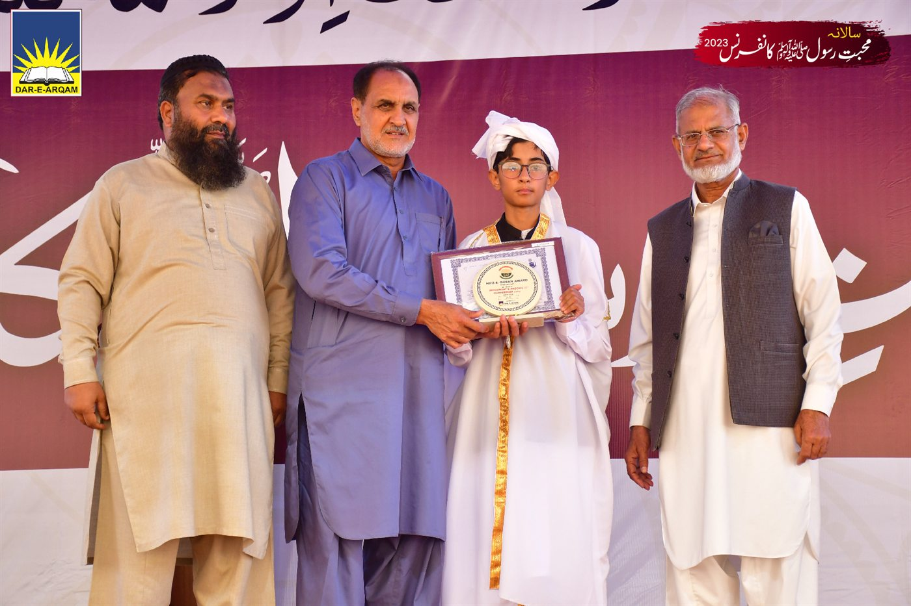
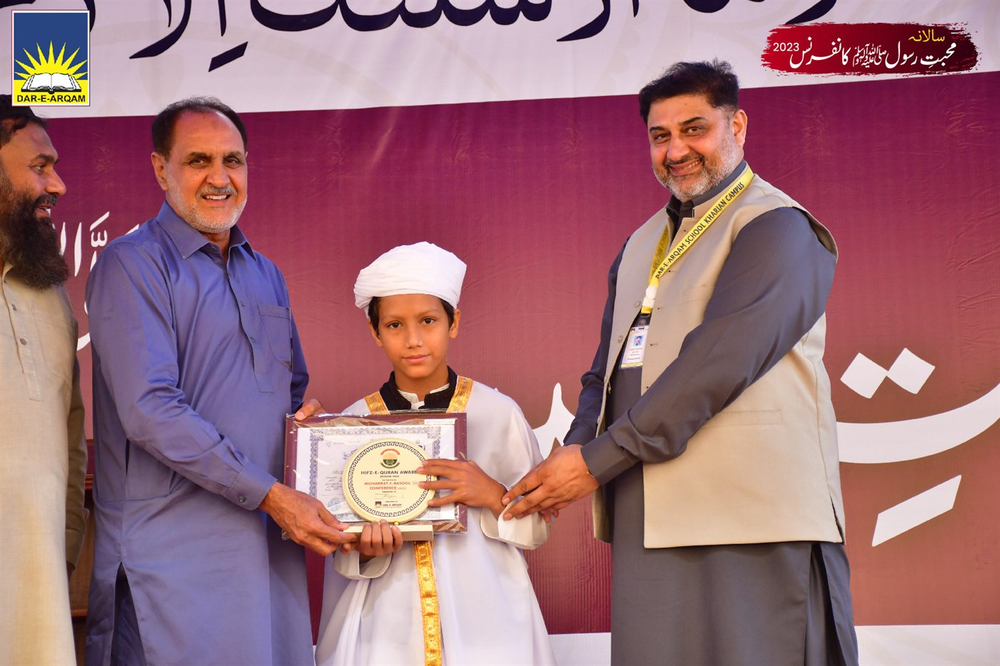
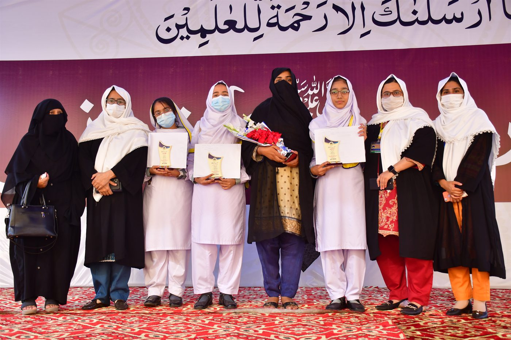